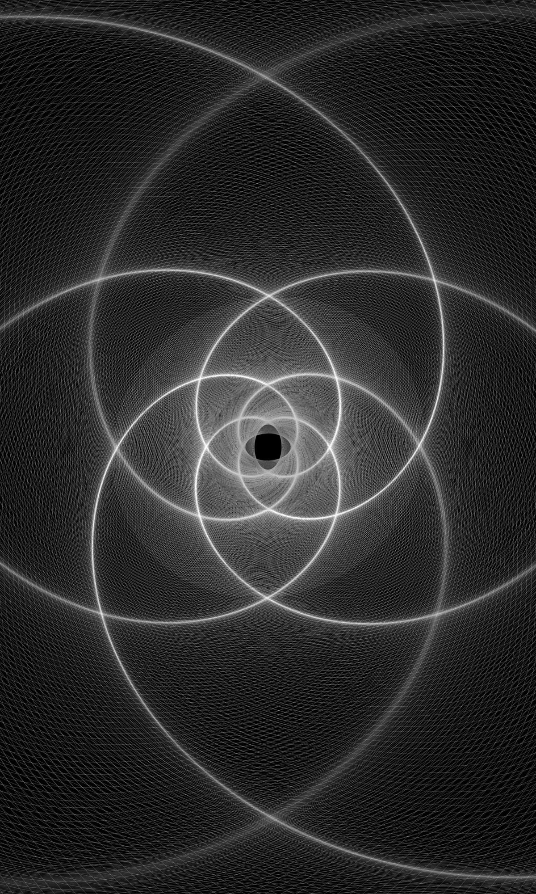

Bitácora del Despertar
Entrega #1: Pequeñas verdades para tiempos intensos

Vivimos una época de transformación profunda. Cada vez más personas sienten el llamado a sanar, comprenderse, expandir su conciencia y reconectar con algo más esencial. Pero en medio de esta búsqueda también aparece uno de los grandes desafíos de nuestro tiempo: el exceso de información.
Este texto nace como una primera entrega sobre el llamado "despertar espiritual", un proceso amplio, complejo y profundamente humano. No pretende darte verdades absolutas, sino ofrecerte una mirada consciente para atravesar estos tiempos con más claridad, presencia y coherencia interior.
El exceso de información y la desconexión de uno mismo
Vivimos en una era prodigiosa en muchos sentidos. Nunca antes habíamos tenido acceso tan inmediato a tantos conocimientos, herramientas y perspectivas. Internet se ha convertido en una biblioteca prácticamente infinita donde podemos aprender sobre espiritualidad, psicología, energía, conciencia, sanación y desarrollo personal.
Y eso es valioso.
El problema aparece cuando, en el afán de comprendernos, buscamos compulsivamente afuera aquello que ya existe dentro de nosotros.
Pasamos horas consumiendo contenido: podcasts, reels, videos, foros, libros, cursos, opiniones ajenas. Escuchamos a otros hablar sobre la vida, la conciencia, las emociones y el alma… pero pocas veces hacemos silencio para escucharnos realmente a nosotros mismos.
No hay nada negativo en inspirarse en otros seres humanos. De hecho, el intercambio de experiencias puede abrirnos puertas, expandir nuestra mirada y motivarnos a recorrer nuestro propio camino. Pero cuando toda nuestra energía queda dirigida hacia el exterior, comenzamos a perder contacto con nuestra fuente interna de sabiduría.
Y ahí aparece el vacío.
El despertar no consiste en acumular información
Uno de los grandes malentendidos del camino espiritual es creer que despertar significa "saber más".
Pero el verdadero despertar no tiene tanto que ver con acumular conceptos, sino con integrar profundamente aquello que vivimos.
Porque si el conocimiento no desciende al cuerpo, queda atrapado únicamente en el plano mental.
El despertar no es solo comprender. Es encarnar.
El cuerpo: la interfaz sagrada de la experiencia humana
Durante mucho tiempo se nos enseñó a vivir desconectados del cuerpo, como si la mente, las emociones y la energía fueran dimensiones separadas. Sin embargo, todo está íntimamente unido.
El cuerpo físico no es un simple vehículo biológico. Es una inteligencia viva.
A través del cuerpo sentimos, percibimos, procesamos y damos significado a la experiencia humana. El cuerpo registra emociones, memorias, vínculos, traumas, intuiciones y también estados de expansión de conciencia.
Sentimos amor, miedo, tristeza o alegría en el cuerpo.
Creamos a través del cuerpo.
Damos vida a través del cuerpo.
Por eso, cualquier proceso profundo de transformación necesita incluirlo.
Integrar: la parte más olvidada del camino espiritual
Hoy existe una enorme oferta de retiros, ceremonias, meditaciones, formaciones y experiencias transformadoras. Y muchas de ellas pueden ser verdaderamente reveladoras.
Pero vivir una experiencia intensa no garantiza una transformación real.
Lo importante ocurre después.
La integración es el puente entre una experiencia y una verdadera evolución de conciencia.
Integrar significa permitirnos digerir lo vivido. Dar espacio a las emociones emergentes. Nombrar recuerdos, comprender patrones, observar heridas y reconocer partes de nosotros mismos que quizás nunca habíamos visto con claridad.
A veces, despertar implica justamente eso: vernos por primera vez sin tantas capas, máscaras o mecanismos de defensa.
Poco a poco comenzamos a desmontar el artificio construido alrededor de nuestra identidad y nos acercamos a algo más auténtico, más simple y más verdadero.
Despertar también es limpiar
El camino de conciencia no consiste en añadir infinitamente nuevas técnicas, nuevas teorías o nuevas etiquetas espirituales.
Muchas veces se trata, simplemente, de limpiar.
- Limpiar ruido.
- Limpiar automatismos.
- Limpiar exceso.
- Limpiar todo aquello que nos aleja de nuestra esencia.
Podemos pensar en ello como una casa: para que un espacio sea habitable necesita orden, aire y mantenimiento.
Lo mismo sucede en nuestro mundo interno.
Para que algo nuevo pueda entrar, primero necesitamos crear espacio.
La importancia de una ecología interna
Así como muchas personas cuidan lo que comen o intentan sostener hábitos saludables, también es fundamental observar aquello que consumen nuestros sentidos.
Porque no solo nos alimentamos de comida.
También nos alimentamos de conversaciones, imágenes, estímulos, vínculos, entornos y energía emocional.
Por eso es importante preguntarnos:
- ¿Qué tipo de información consumo cada día?
- ¿Cómo me siento después de interactuar con ciertas personas?
- ¿Qué contenido estoy permitiendo entrar en mi mente y en mi cuerpo?
- ¿Estoy escuchando mi propia voz o solo el ruido externo?
Poner límites sanos también es un acto espiritual.
El despertar de conciencia y la responsabilidad energética
Estamos atravesando un tiempo intenso, acelerado y profundamente transformador. Muchas personas sienten movimientos internos que ya no pueden ignorar: crisis existenciales, cambios de percepción, necesidad de autenticidad, agotamiento emocional o una fuerte búsqueda de sentido.
Sí, hay un impulso colectivo hacia el despertar.
Pero justamente por eso se vuelve fundamental observar dónde colocamos nuestra atención y nuestra energía.
Porque la energía sigue a la atención.
Y aquello que alimentamos internamente también repercute en lo colectivo.
Nunca subestimes el poder creador de tu mundo interno: tu mente, tus emociones y tu estado de conciencia participan activamente en la realidad que experimentas.
La medicina eres tú
Entre tanta oferta espiritual, tantas voces externas y tantos caminos posibles, hay algo importante que quiero recordarte:
La medicina no está afuera. La medicina eres tú.
El tesoro que buscas no vive en otra persona, ni en una técnica milagrosa, ni en una fórmula perfecta.
Vive dentro de ti.
- En tu capacidad de escucharte.
- En tu autenticidad.
- En tu presencia.
- En tu valentía para atravesarte con honestidad.
Estos son tiempos desafiantes, sí. Pero también profundamente fértiles para recordar quiénes somos más allá de las capas, del ruido y de las exigencias externas.
Date tiempo.
Priorízate.
Haz silencio.
Y cuando vuelvas a encontrarte contigo mismo, permite que tu propio camino se convierta también en inspiración para otros.